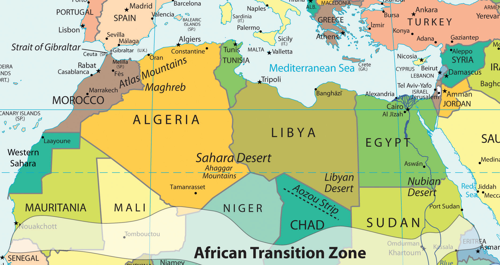
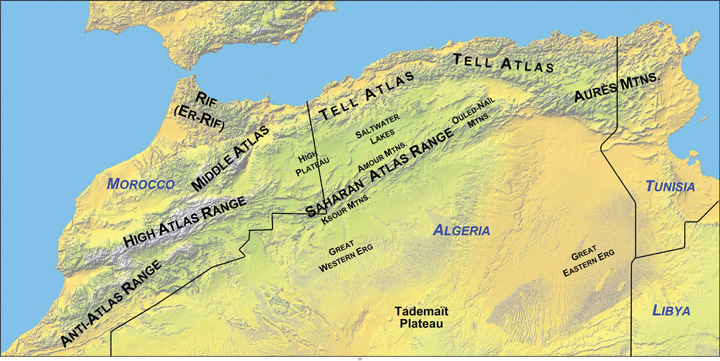
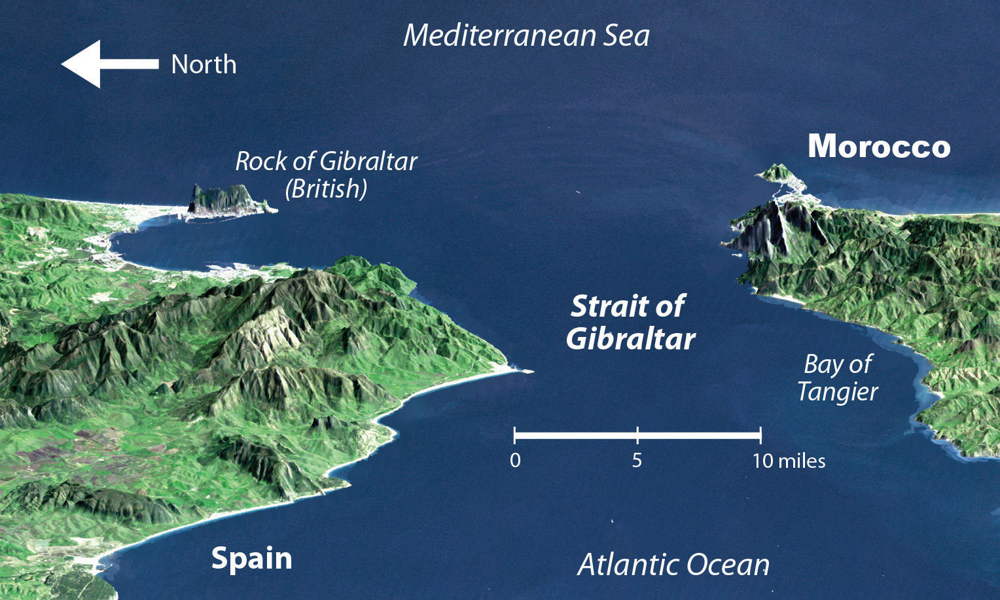
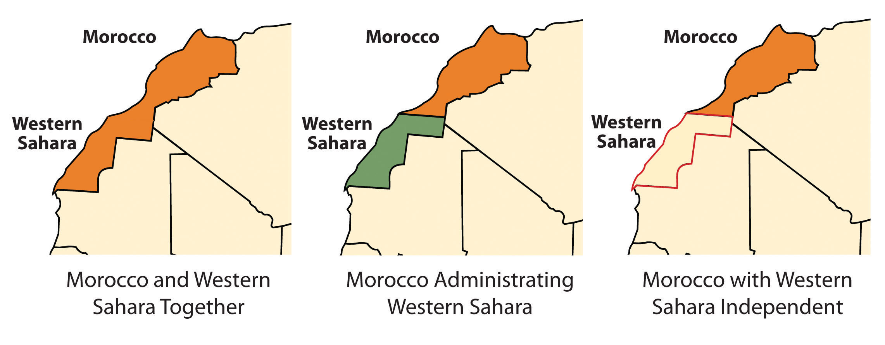
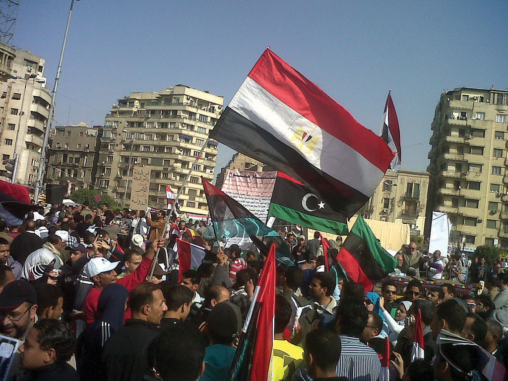
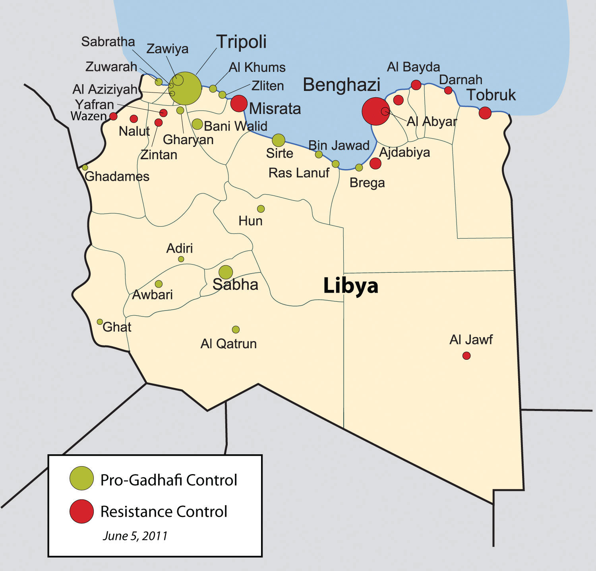
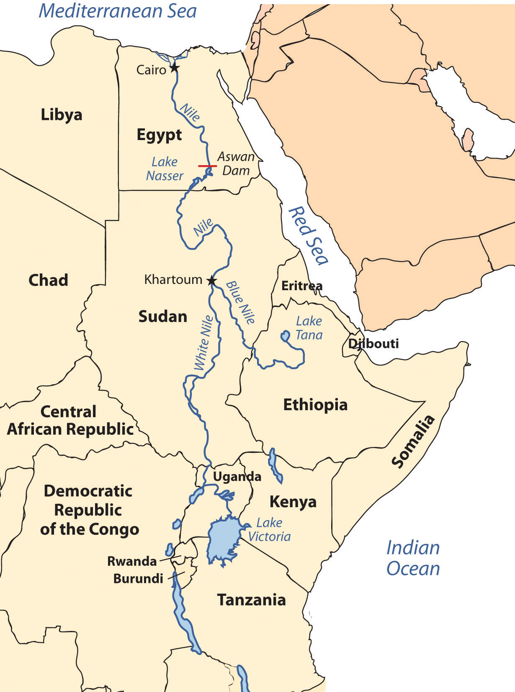
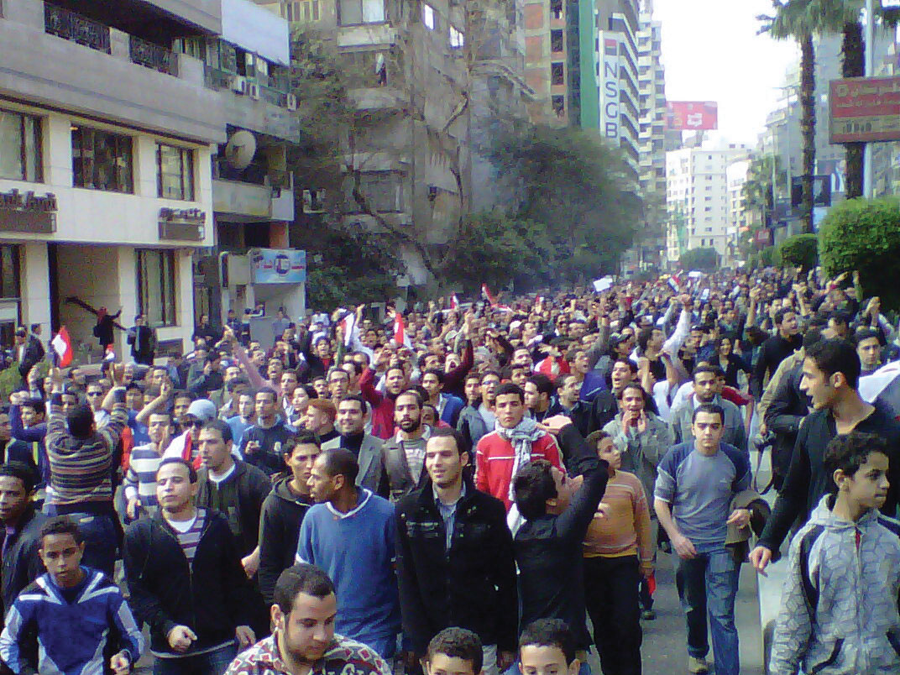
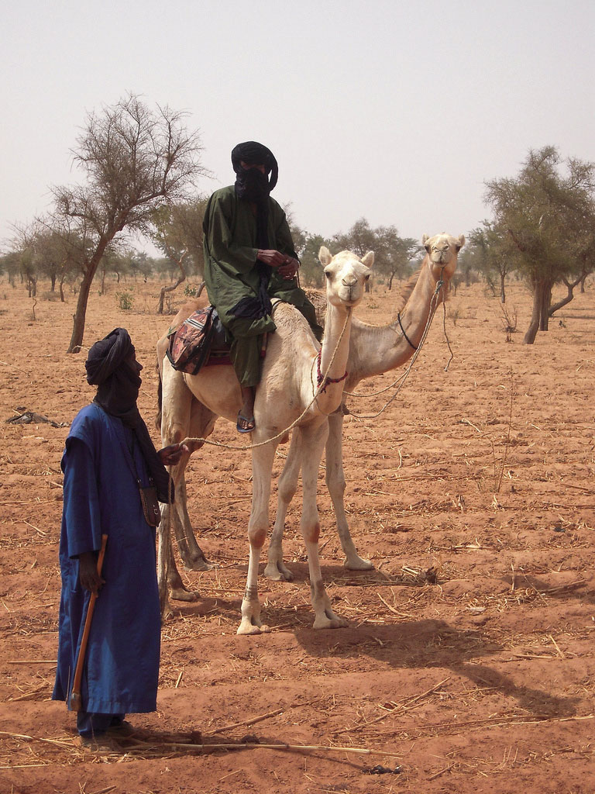
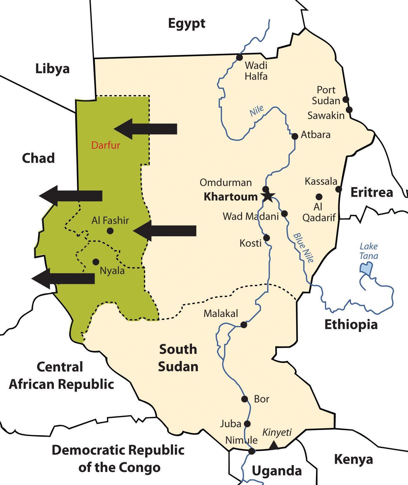

North Africa’s primary connection with the Middle East and Central Asia is that Islam diffused to North Africa from the Middle East and Central Asia. Today, it is a Muslim-dominated realm with Arabic as its primary language. Historically, the ethnicity of North Africa was predominantly BerberThe main ethnic background of the African groups in the Maghreb. with the nomadic TuaregNomadic ethnic group of the Sahara known for its indigo-colored clothing and use of camels for transportation. and other local groups interspersed. When Islam diffused into North Africa, the Arab influence and culture were infused with it. Modern Egypt has become the cornerstone of the Arab world; more Arabs live in Cairo than in any other city on Earth. The three main areas of interest are the Maghreb of the northwest; the Nile River valley in the east; and the African Transition Zone, where the Sahara Desert transitions into the tropical type A climates of Central Africa’s equatorial region.
Figure 8.13 North Africa and the Maghreb
The Maghreb traditionally includes Morocco, Algeria, and Tunisia, but Libya is also considered part of the Maghreb by many inhabitants of the region.
Source: Map courtesy of University of Texas Libraries, http://www.lib.utexas.edu/maps/world_maps/world_pol_2011.pdf.
Islam diffused through North Africa to the Berber people of the Maghreb and entered Europe across the Strait of Gibraltar to the Iberian Peninsula. The Arab-Berber alliance, called the MoorsBerber-Arab alliance in North Africa that crossed the Strait of Gibraltar and brought Islam to the Iberian Peninsula., invaded Spain in 711 CE. The Islamic influence thrived in Iberia and would have continued into mainland Europe if not stopped by Christian forces such as Charles Martel’s army in the famous Battle of Tours. Islam was eventually pushed out of the Iberian Peninsula and held south of the Strait of Gibraltar. Islamic architecture and influence remain part of the heritage of Iberia.
The historical geography of North Africa is not complete without an understanding of the European influences that have dominated or controlled this region for centuries. The Roman Empire controlled much of the coastal area of the Mediterranean during its zenith. The Romans built ports, aqueducts, roads, and valuable infrastructure. After the fall of the Roman Empire, common bonds of religion and language were created for the people through the invasion of the Arabs, who introduced the Islamic faith. North Africa was later dominated by European colonialism. France controlled and colonized the region of the Barbary Coast along North Africa’s western waterfront, including Algeria, Tunisia, and parts of Morocco. Italians colonized the region that is now Libya. The Barbary Coast of the Mediterranean was once a haven for pirates and a danger to shipping during the colonial era. Even the United States involved itself with wars against the pirates off the coast of the Berber states of North Africa during the early 1800s. After the fall of the Ottoman Empire, Britain controlled Egypt and parts of the Sudan. The Spanish colonized parts of Morocco and Western Sahara. In due time, resistance movements were successful in defeating the colonial powers and declaring independence for all the countries of North Africa. However, the European influence remains through the region’s dependence on trade and economic partnerships with Europe.
North Africa is separated from Subsaharan Africa by the African Transition Zone, a transitional area between Islamic-dominated North Africa and animist- and Christian-dominated Subsaharan Africa. It is also a transition between the Sahara Desert and the tropical type A climates of Africa’s equatorial region. This is a zone subject to shifting boundaries. The region was once a major trade route between the Mali Empire of the west and the trade centers of Ethiopia in the east. Camel caravans have crossed this sector of Africa for centuries, and camel caravans from Mecca might have traveled across this zone. Many nomadic groups continue to herd their livestock across the region in search of grazing.
The Maghreb is a region extending from Morocco to Libya that is distinguished by the main ranges of the Atlas Mountains, which reach elevations of near thirteen thousand feet. The main Atlas range is often snow-covered at higher elevations. The name Maghreb, which in Arabic means “Isle of the West,” receives between ten and thirty inches of rainfall per year. This is substantially more rainfall than what is received in the Sahara Desert to the south. The Atlas Mountains extract precipitation from the air in the form of rain or snow, which allows fruits and vegetables to be grown in the fertile mountain valleys of the Maghreb. To the south of this region is the vast Sahara Desert with lower precipitation and warmer temperatures. Libya is actually outside the range of the Atlas Mountains but is associated with the Maghreb by most local inhabitants.
Figure 8.14 The Main Mountain Ranges of the Maghreb
The Atlas Mountains of the Maghreb extend to the east and west of the main ranges.
Source: Map courtesy of Williamborg, http://commons.wikimedia.org/wiki/File:Atlas-Mountains-Labeled-2.jpg.
Aided by a moderate type C climate, the northern coastal region of the Maghreb and the mountain valleys are a center for agricultural production, including grapes, dates, oranges, olives, and other food products. Think about how geography affects population: Which climate type do most human groups gravitate toward? What conditions will you find when you combine this climate type and generous quantities of water and food? As you fit the pieces of the geographic puzzle together, you can understand why populations centralize in some places and not in others. The Maghreb is an attractive place for human habitation, but it borders on the inhospitable vastness of the Sahara Desert. Most of the Maghreb’s residents live in cities along the Mediterranean coast. There are few people in the vast desert interior of these countries. The exceptions are groups such as the Tuareg that are found in the Sahara.
The Maghreb is an expansive region with countries of size. Algeria, Libya, and Morocco are large countries in terms of physical area. Algeria is Africa’s largest country as of 2011. Algeria is similar in area to the entire United States east of the Mississippi River, Libya is larger than the state of Alaska, and Morocco is the size of the state of California. A large percentage of Algeria south of the Maghreb and a large percentage of the area south of the Mediterranean coastline in Libya fit the classification of desert conditions. The largest cities of Libya are along the coast, but other Libyan cities are positioned in the desert region. Tunisia, the smallest of the countries on the Mediterranean, is about the same size as the US state of Wisconsin and has mountains in its north and desert areas to the southwest.
All the countries of the Maghreb have former connections to Europe. These ties have strengthened in recent years because of an increase in trade and the economic dependencies that have been created between Europe and the Mediterranean. North Africa can grow fruit and vegetable crops that are not as plentiful in the colder northern latitudes. In the last half of the twentieth century, an enormous amount of oil was discovered in the Maghreb, and Europe has a growing need for energy. The discovery of oil changed the trade equation: oil and natural gas revenues subsequently advanced past agricultural goods as the main export products. Oil and natural gas exports now make up 95 percent of the export income for Algeria and Libya.
Europe, which is in the higher stages of the index of economic development, has small families with fewer young people to fill entry-level service jobs, and North Africa has a burgeoning population of young people seeking employment. Many people from North Africa speak the languages of their former colonial masters, and when they leave North Africa seeking employment, they find the transition to a European lifestyle relatively straightforward. Migration from the shores of North Africa to Europe is not difficult; the Strait of Gibraltar, for example, is only about nine miles across from Morocco to Spain.
Figure 8.15 The Strait of Gibraltar
North Africa is separated from the Iberian Peninsula by the Strait of Gibraltar, which connects the Mediterranean Sea with the Atlantic Ocean. The distance from Morocco to Spain across the strait is about nine miles, making immigration to Europe from North Africa only a matter of a short boat ride.
Source: Satellite image courtesy of NASA SRTM Team, http://earthobservatory.nasa.gov/IOTD/view.php?id=3926.
European countries have attempted to implement measures to halt the tide of illegal immigration into their continent from North Africa but have not been successful. The need for cheap labor in European countries is a major economic factor in this equation. The core-periphery spatial relationship creates the push-pull forces of migration based on opportunities and advantages. Europe needs cheap labor and more energy, provides employment opportunities, and has an advantage in its higher standards of living: these forces attract immigration and pull people toward Europe. North Africa can supply labor and oil, has high levels of unemployment, and suffers from poor economic conditions: these factors push people to emigrate from North Africa to places where conditions are more attractive. Europe is the core economic region, and North Africa is the peripheral economic region. People usually shift from periphery to core in their migration patterns, and this is the case across the Mediterranean.
European and American influences have been strong in North Africa. Western culture continues to compete with fundamental Islamic tendencies in the region, especially in urban centers. In Morocco, which is the farthest country from Mecca, democratic reforms have opened the country to more opportunities for women and have led to exposure to Western fashions, ideas, and products. Tunisia has a supportive Westernized society. In Libya, birth control or family planning products have not always been supported by the government, so family size remained relatively high until about 1985 when it began to decline. Women are allowed to go to college in Libya, but a smaller percentage are enrolled compared to men. More than 90 percent of Libyans live in urban areas. Exposure to Western concepts, along with urbanizing and industrializing of the economy, has caused a drop in family size in Libya—from 7.5 children in 1975, to about 4.0 children in 1990, and down to 3.0 children in 2010.“The World Factbook,” Central Intelligence Agency, https://www.cia.gov/library/publications/the-world-factbook; “Demographics of Libya,” Wikipedia, http://en.wikipedia.org/wiki/Demographics_of_Libya. More women are trading traditional dress for Western-style clothing and are entering the workforce to the extent they are allowed.
Economic and political pressures are building across North Africa. Toward the end of 2010 and the spring of 2011, activists called for the governments in North Africa to implement change and address the push of North Africans for stronger democratic openness, less government corruption, and the sharing of wealth accumulated by those in power. Leaders have been reluctant to relinquish power and are being challenged by protests and revolution. The driving forces for the people have been high unemployment rates, high food prices, and the lack of adequate housing.
Western Sahara is the region south of Morocco. In the latter half of the 1970s, Morocco annexed and took control of this region following the withdrawal of Mauritanian control. A local resistance group called the Polisario Front challenged Morocco’s claim to Western Sahara and staged a guerilla war to fight for the independence of Western Sahara. By 1991, the United Nations (UN) had stepped in, brokered a halt to the fighting, and worked to resolve the matter. Both sides have offered proposals to the UN; Morocco’s plan advocates for annexation, and Polisario’s plan is for independence. Western Sahara is mainly desert terrain and only has about three hundred thousand people. The UN delegation has indicated that independence is not realistic. However, talks continue between the factions to work out a solution.
Figure 8.16 Morocco and Western Sahara
Algeria has also experienced its share of violent clashes; in this case, the clashes are between Islamic fundamentalist groups and the democratically elected government. In the 1990s, the Islamic Salvation Front, which advocates for a fundamentalist Islamic state in Algeria, challenged the secular political mainstream. The electoral process was interrupted, and the government found itself fighting an Islamic insurgency within the country. By 1998, more than one hundred thousand people had been killed. The horror of the violence received international attention. Islamic extremists widened their attacks and massacred entire villages to send a message to support their cause. By the end of the decade, government forces gained control of the country, and the Islamic Salvation Front officially disbanded. Smaller extremist groups continued to operate. They joined forces with Osama bin Laden’s al-Qaeda group to create an insurgent group called al-Qaeda in the Lands of the Islamic Maghreb, which has continued a campaign of terror and violence against the Algerian government and people in the region with Western interests. Coinciding with similar protests across North Africa, during 2010 and 2011, there was an insurgence of protests and demonstrations against the government of Algeria by its people, who were asking for better living conditions. The government made some concessions to address the issues, but the political climate in Algeria continues to be tense as the government struggles to find ways to satisfy the needs of the people.
Tunisia was once an outpost of the Roman Empire, and well-preserved Roman ruins can be found throughout North Africa. In 1956, at the end of the colonial era, France recognized Tunisia’s independence, and the country established its own government. The political problems in Tunisia today stem from the fact that little has changed in the government since the time of independence. Since independence Tunisia has had few changes in government leaders. The country’s second president, Ben Ali, dominated the country for twenty-four years (1987–2011). Ben Ali worked to stem the tide of Islamic fundamentalism, opened the country to establishing rights for women, and allowed more tolerance of religious diversity; however, under his leadership the government struggled to find a balance between democratic openness and authoritarian measures to keep the country moving forward with economic development and social services for a growing population.
Figure 8.17 Egyptian Demonstration
Protests in Cairo’s Tahrir Square on March 4, 2011, were in support of demonstrations in Egypt and in Libya, which followed the protests in Tunisia.
Source: Photo courtesy of gr33ndata, http://www.flickr.com/photos/gr33ndata/5500654825/in/photostream.
Beginning in 2010, corruption, unemployment, and a lack of personal freedoms prompted Tunisians to take to the streets in massive protests, which grew into a revolution for change. By the end of the year, President Ben Ali was removed from power and an interim government was formed. Protests continued as the government shifted to adapt to the conditions. In 2011, a new constitutional assembly was formed to address changes in the government. Economic conditions have remained thorny during the transition.
Muammar Gadhafi came to power in Libya in 1969 by overthrowing the king and never held an election for political control. He used Libya’s oil revenues to build up the country’s infrastructure, enhance his military, and create an anti-Western terrorist network with weapons production. Personal freedoms have been limited in Libya, and there has been no free speech, freedom of the press, or freedom of assembly. Gadhafi supported various Islamic terrorist groups and nationalized all the oil assets of international corporations in Libya in the early 1980s. This action of nationalism directly opposed and angered many corporate colonialists. His policies caused the international oil companies, which operated much of the oil industry there, to pressure the US government to conduct a series of devastating military bombing raids on Libya in 1986 in an attempt to kill Gadhafi.
Gadhafi deployed his military along Libya’s southern border with Chad in a zone called the Aozou Strip. This border territory was the site of a boundary dispute over land that was reported to hold uranium reserves. Libyan forces controlled the Aozou Strip for a number of years before Chad forced them out. In 1994, the UN ruled that the zone belonged to Chad, and the dispute was finally resolved. In other activities, Libyan agents were accused of planting bombs on passenger airlines, such as the 1988 explosion on Pan Am flight over Scotland that killed 270 people and the 1989 explosion of UTA flight 772 over Niger that killed 170 people. After the 9-11 tragedy in New York, Gadhafi backed down on his aggressive anti-Western activities and agreed to dismantle some of his weapons production facilities and comply with international trade agreements. Libya then denounced terrorism, and the United States lifted economic sanctions against Libya and exchanged ambassadors.
Unrest in Libya surfaced again in 2011, coinciding with protests under way in neighboring Tunisia, Algeria, and Egypt. Factions in Libya that opposed Gadhafi’s regime advocated for his removal from office and for more democratic freedoms. Based in Libya’s second-largest city of Benghazi, in the eastern sector of the country, the resistance movement gained momentum and pushed for an all-out civil war that split the country in half. Forces loyal to Gadhafi in the capital city of Tripoli in the western part of the country faced off against the separatists under the structure of the National Transitional Council (NTC). In 2011, Gadhafi had been in power for more than forty-two years. His family and clan controlled much of the country’s wealth from the export of oil. Gadhafi’s control of Libya did not allow for the establishment of strong administrative divisions within the government to share power.
The UN, through the North Atlantic Treaty Organization (NATO), implemented a no-fly zone over Libya and allowed military strikes against Gadhafi’s forces to stop the massacre of civilians in the civil war. By the end of the summer of 2011, the resistance forces headquartered in Benghazi had pushed across to the western part of Libya and took control of Tripoli. Gadhafi was no longer in control of the country, as the NTC became the transitional power base. Muammar Gadhafi was killed in October 2011. Post-Gadhafi Libya will most likely be quite different from the status quo of the past four decades. Nation building will become a major focus for North Africa, which may be more difficult for Libya than its neighbors because of the lack of an administrative structure.
Figure 8.18 Control of Cities in Libya Based on the Civil War as of June 5, 2011
Source: Map courtesy of Rafy, http://commons.wikimedia.org/wiki/File:Libyan_Uprising.svg.
The Nile River originates in East Africa in Lake Victoria and in Ethiopia in Lake Tana. The White Nile flows north from Lake Victoria through Uganda and into Sudan, where it converges with the Blue Nile at the city of Khartoum, Sudan’s capital. The Blue Nile originates in Lake Tana in Ethiopia. From Khartoum, the Nile River flows north through the Nubian Desert into Egypt, where it eventually reaches the Mediterranean Sea. The fresh water of the Nile is a lifeline that enables agriculture and transportation and supports a growing human population in the region.
Figure 8.19 Nile River System
The White Nile originates in Lake Victoria, and the Blue Nile originates in Lake Tana. They converge at Khartoum.
Until the Aswan High Dam was completed in 1968, the river flooded its banks yearly, depositing silt and nutrients onto the soil and causing enormous damage to infrastructure. As far back as when the pharaohs ruled Egypt, the people used flood irrigation to grow their crops. Today, water is pumped from the controlled Nile River onto the fields to water crops. This change has increased the number of crops that can be grown per year. However, it has also caused a buildup of salt in the soil, resulting in declining soil quality. Without annual flooding, the salts cannot be dissolved away but remain in the soil, reducing yields. Almost a third of Egypt’s population works in agriculture; about half the population is rural.
Cairo, Egypt’s capital, lies at the northern end of the Nile River. With a population of more than ten million, it is the largest North African city and home to more Arabs than any other city in the world. It is considered the cornerstone city of Arab culture. Cairo is so crowded that more than a million people live in its old cemetery, the City of the Dead. Cairo’s residents, and the millions of people in Egypt, depend on the Nile River for their survival. About 95 percent of Egypt’s population lives within fifteen miles of the Nile River. As the population has grown, urban expansion has encroached on the farmland of the Nile Valley. Egypt can no longer produce enough food for its people; about 15 percent of its food comes from other countries, mainly the United States.
Conflicts between democratic reforms and Islamic fundamentalism are evident in Egypt. The growing population of about eighty million in 2010 is a major concern. In Egypt’s case, democratic reformers were able to promote a strong program of family planning and birth control to help reduce family size, which in 2008 was at 2.8 children per woman and declining. The government even created a popular Egyptian soap opera to promote the concept that it was appropriate in an Arab culture to use family planning and have a small family. The prime-time program, called And the Nile Flows On, told the story of a young village bride dealing with the issues of pregnancy and life complicated by the interjection of a progressive sheik and a meddling female doctor. The drama addressed many family planning and religious issues regarding the acceptability of breaking with tradition to address the growing population problem in Egypt.
Television programming is popular in Egypt, and even reruns of old American shows such as Bonanza and Dallas are dubbed into Arabic and shown on Egyptian television. Egypt is a cultural mix with a strong heritage steeped in Arab history with a secular side that is open to the outside world. The cultural forces that create this paradox have not always been in unison. Egypt has a major connection to Western society because of tourism. The Pyramids of Giza and the Great Sphinx are major attractions that pull in millions of people per year from around the world. Tourism opens up Egypt to outside elements from various cultural backgrounds, most of which are secular.
On the political front, the democratically elected government has received strong opposition from the Islamic BrotherhoodMuslim-based organization in Egypt that was banned by the Egyptian government., which advocates a more fundamentalist Islamic lifestyle and government structure. The democratic reformers that vie with the Islamic Brotherhood for political power support a more open and democratic civil government. These two elements are what drive Egyptian culture and society.
Figure 8.20 Protesting in Egypt
On January 25, 2011, the “Day of Revolt” protests were held in Egypt. Tens of thousands of Egyptians went onto the streets to peaceably protest against the Mubarak government.
Source: Photo courtesy of Muhammad Ghafari, http://www.flickr.com/photos/70225554@N00/5390371651.
The political situation changed in Egypt with the Arab Spring of 2011. Student protests against government corruption and the lack of democratic reforms emerged with an intensity that gained the support of the Egyptian people and forced the Egyptian government to respond. Egyptian president Hosni Mubarak had been in power since 1981 after the assassination of the previous president, Anwar Sadat. President Mubarak was able to win every election for president that had been held since that time. Millions of Egyptians took to the streets in early 2011 in civil protests against the Mubarak government. Massive protests and demonstrations continued until February 11, when President Mubarak announced his resignation. The transition to an interim government has been complicated by continued protests and calls for justice from the people, who have called for Mubarak to stand trial for stealing billions of dollars from the state and concealing it in his own bank accounts. The people and the government continue to search for progressive opportunities to address their issues. What started out as the Arab Spring turned into the Arab Year as all three long-term leaders in Tunisia, Libya, and Egypt were removed from positions of power.
Figure 8.21 Camel and Tuareg Rider in the Southern Sahara Desert
The Tuareg are masters of the desert and camels. They often lead camel caravans on long trips through the desert.
Source: Photo courtesy of Marco Bellucci, http://www.flickr.com/photos/marcobellucci/3417054939.
Stretching across the widest part of Africa on the southern edge of the Sahara Desert is the African Transition Zone. Known as the SahelMeaning “border or margin”; the local variation of the African Transition Zone., meaning “border or margin,” this zone is where the dry arid conditions of the desert north meet up with the moister region of the tropics. For thousands of years, the seasonal grazing lands of the Sahel have been home to nomadic groups herding their livestock across the zone and eking out a living held together by tradition and heritage. Changing climate conditions and overgrazing has enhanced the desertificationLoss of plant life and the encroachment of sand, creating desert conditions. process, and the region is slowly turning into desert. The Sahara Desert is shifting southward, altering the economic activities of the millions of people who live in its path. Ten thousand years ago, North Africa and the Sahara Desert were tropical environments filled with all the biodiversity and wildlife now found in Subsaharan Africa. This desertification process has been occurring for centuries; it is not a new process. Human factors and climate change may be accelerating this process, but they did not create it.
Political stability is complicated to achieve in the African Transition Zone. The political borders established by European colonialism during the Berlin Conference of 1884 remain basically intact and create barriers that hamper the nomadic groups from traveling through the Sahel in search of grazing land for their livestock. Political boundaries now restrict movement and keep people divided and separated into national identities. The African Transition Zone is also in transition from a rural, traditional agrarian culture to a society confronting the information age and modern technology. Camel caravans that once transported goods and materials across wide expanses of desert terrain are being replaced with motor vehicles and aircraft. The many traditional groups across this zone are adapting to the conditions of the modern world but work to retain their values and the traditions of their heritage.
The colonial political borders have impeded progress in the region’s effort to establish stable governments and control the land and resources within its borders. Postindependence governments have thus far been unable to establish stable economic conditions within many of the countries in the Sahel. Natural resources are being exploited for economic profit, which is changing the natural environment. Security and safety have become significant issues. Today this region is unstable, with political and cultural conflicts between the local groups and governments. The current conflicts in Sudan are examples of the instability.
Comparable in size to the entire United States east of the Mississippi River, Sudan is the largest country in Africa. The capital city of Khartoum lies where the Blue Nile River converges with the White Nile. Khartoum’s government has a black Arab majority and follows Islam, complete with Sharia laws. The African Transition Zone crosses Sudan and separates the Arab-Muslim north from the mainly African-Christian south. There has been a civil war between the north and the south for decades. Before a peace agreement brokered in 2005, military soldiers from the north would raid the villages in the south, taking women and children as slaves. Though the Sudanese government denied the slave trade, thousands of Africans were owned by northern black Arabs in Sudan, and many still are. The world community has made little effort to intervene. The price for a slave in Sudan is about fifty US dollars.
The differences in religion, ethnicity, and culture have always divided southern Sudan from the north. Additional economic considerations might fuel the debate because of an increase in oil production in the region. In January 2011, the southern region of Sudan voted on a referendum that would allow the south to break away and become an independent country called the Republic of South Sudan. The acceptance of this new republic will change the map of the region and the dynamics between South Sudan and North Sudan. The new Republic of South Sudan was formalized in July of 2011. Juba is designated as the capital with talk of creating a new forward capital in the center of the newly formed country in the future. The many clans and indigenous groups make it difficult for unity and cohesiveness in the new country. Armed groups in the various states continue to cause internal division, while at the same time boundary disputes continue to be worked out with North Sudan.
In 2003, various groups in Darfur complained that the Khartoum government was neglecting them. A militia group calling itself the JanjaweedMilitias in Sudan hired by the Arabs to ethnically cleanse the Darfur region. was recruited by the local Arabs to counter the resistance in Darfur. The Janjaweed began an ethnic cleansing campaign that pushed into the Darfur region, burning villages, raping women, and killing anyone who opposed them. Refugees began to flee into the neighboring country of Chad.
Figure 8.22 Sudan, the Region of Darfur and the Republic of South Sudan
South Sudan has elected to break away and become independent. The Darfur region has been experiencing genocide by Janjaweed militias backed by the Arab majority in northern Sudan.
In this particular case, the campaign was not based on religious divisions, because both sides were Muslim. This was an ethnic conflict in that the people of Darfur are of a traditional African background and the people of northern Sudan consider themselves Arab, even though they may have dark skin. Accurate numbers have been difficult to verify, but as of 2010 an estimated 300,000 people have died in this conflict. There are more than 2.7 million refugees, many of them in Chad.“Q&A: Sudan’s Darfur Conflict,” BBC News, http://news.bbc.co.uk/2/hi/africa/3496731.stm. Just as the government of Sudan denied the slave trade, it denies that it supports the Janjaweed. The African Union provided a modest number of peacekeeping troops before the UN stepped in to provide security. It has been up to the world community and Sudan to take more action and provide more assistance. Food, water, and care for the refugees have taxed the region’s aid and support system.
Former Libyan leader Muammar Gadhafi was instrumental in the development of the African Union (AU) in the mid-1990s. The Sirte Declaration (titled after Gadhafi’s hometown of Sirte in Libya) was issued by the Organization of African Unity, which outlined the need for the creation of the AU. The AU was launched in Durban, South Africa, on July 9, 2002. Fifty-three countries formed this intergovernmental organization. The focus of the AU is on the health, education, economic development, political stability, environmental sustainability, and general welfare of the people of Africa. The organization strives to integrate the socioeconomic and political stability of its members and promote a continent-wide effort for security and peace. The AU is working to create a proper political climate, one that helps its member states engage in the global economic marketplace by negotiating international issues and policies that affect Africa.
The dominating activities of colonialism and neocolonialism (corporate colonialism) are big concerns for the AU. The AU’s objective is to bring more unity to the political and economic arena between the African countries to address the transition to a globalized world. It faces many challenges within its realm, including health care issues such as HIV/AIDS and malaria that have devastated much of Africa. The AU is working to bring political stability to countries such as Sudan and other countries experiencing civil unrest because of political turmoil or civil war, such as the Congo, Somalia, Sierra Leone, Ivory Coast, and Liberia. AU peacekeeping troops are assisting in this process. The legal issues regarding border disputes or territorial disputes such as that of Western Sahara are problems that the AU attempts to address.
In the global scale of economic and political supranationalism, the AU will be up against three main powerhouses: the European Union, the North American Free Trade Agreement, and the East Asian Community. Regions across the globe are working on trade associations to create economic networks to bring about greater cooperation and commerce between nations. The AU is one part of that network that represents a growing percentage of the world’s population and the second-largest continent on Earth.
Gadhafi was the AU chairman when the uprisings and demonstrations of the Arab Spring began in January of 2011, at which time his chairmanship ended. At the beginning of the civil war in Libya, the AU attempted to meet with Gadhafi to mediate the situation. The NATO no-fly zone declaration and intervention restricted AU activities in Libya. After Gadhafi was no longer in power in Libya by the fall of 2011, the AU continued to not recognize the NTC (National Transition Council) as the legitimate government of Libya.
Identify the following key places on a map: